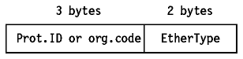
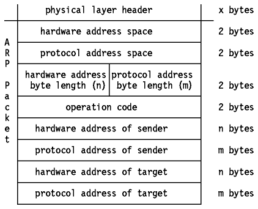
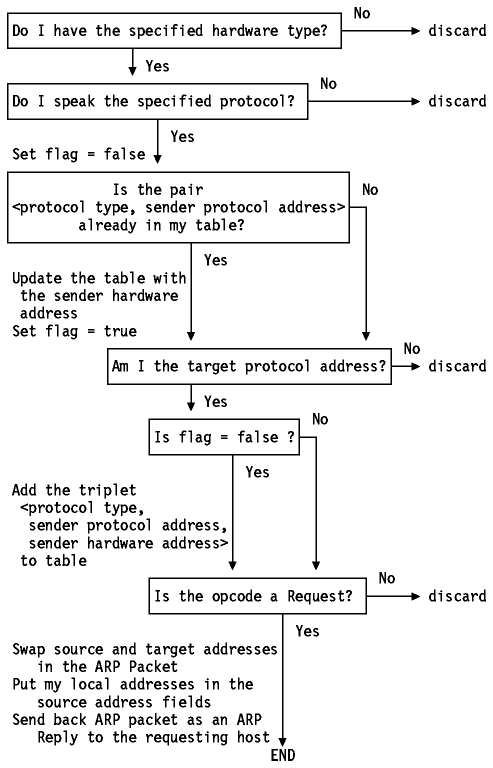
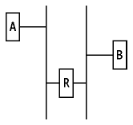

Table of Contents
Table of Contents  IGMP
Operation
IGMP
OperationTable of Contents IGMP
Operation
The ARP protocol is a network-specific standard protocol. Its status is elective.
The address resolution protocol is responsible for converting the higher-level protocol addresses (IP addresses) to physical network addresses. First, let's consider some general topics on Ethernet.
Two frame formats can be used on the Ethernet coaxial cable:
Thus, for all practical purposes, the Ethernet physical layer and the IEEE 802.3 physical layer are compatible. However, the Ethernet data link layer and the IEEE 802.3/802.2 data link layer are incompatible.
Due to a growing number of applications using IEEE 802 as lower protocol
layers, an extension was made to the IEEE 802.2 protocol in the form
of the Sub-Network Access Protocol (SNAP). It is an
extension to the LSAP header above, and its use is indicated by the value 170
in both the SSAP and DSAP fields of the LSAP frame above.

Figure: IEEE 802.2 SNAP Header
The RFC indicates clearly that the IEEE 802.2/802.3 method is the preferred method, that is, that all future IP implementations on IEEE 802.3 networks are supposed to use the second method.
As this new approach (very important for implementations) passed almost unnoticed in a little note of an unrelated RFC, it became quite confusing, and finally, in February 1988, it was repeated in an RFC on its own: RFC 1042, which obsoletes RFC 948.
However, in practical situations, there are still TCP/IP implementations that use the older LSAP method (RFC 948 or 1042). Such implementations will not communicate with the more recent implementations (such as IBM's).
Note also that the last method covers not only the IEEE 802.3 networks, but also the IEEE 802.4 and 802.5 networks such as the IBM Token-Ring LAN.
On a single physical network, individual hosts are known on the network by their physical hardware address. Higher-level protocols address destination hosts in the form of a symbolic address (IP address in this case). When such a protocol wants to send a datagram to destination IP address w.x.y.z, the device driver does not understand this address.
Therefore, a module (ARP) is provided that will translate the IP address to the physical address of the destination host. It uses a lookup table (sometimes referred to as the ARP cache) to perform this translation.
When the address is not found in the ARP cache, a broadcast is sent out on the network, with a special format called the ARP request. If one of the machines on the network recognizes its own IP address in the request, it will send an ARP reply back to the requesting host. The reply will contain the physical hardware address of the host and source route information (if the packet has crossed bridges on its path). Both this address and the source route information are stored in the ARP cache of the requesting host. All subsequent datagrams to this destination IP address can now be translated to a physical address, which is used by the device driver to send out the datagram on the network.
ARP was designed to be used on networks that support hardware broadcast. This means, for example, that ARP will not work on an X.25 network.
ARP is used on IEEE 802 networks as well as on the older DIX Ethernet networks to map IP addresses to physical hardware addresses. To do this, it is closely related to the device driver for that network. In fact, the ARP specifications in RFC 826 only describe its functionality, not its implementation. The implementation depends to a large extent on the device driver for a network type and they are usually coded together in the adapter microcode.
If an application wishes to send data to a certain IP destination address, the IP routing mechanism first determines the IP address of the ``next hop'' of the packet (it can be the destination host itself, or a router) and the hardware device on which it should be sent. If it is an IEEE 802.3/4/5 network, the ARP module must be consulted to map the <protocol type, target protocol address> to a physical address.
The ARP module tries to find the address in this ARP cache. If it finds the
matching pair, it gives the corresponding 48-bit physical address back to the
caller (the device driver) which then transmits the packet. If it doesn't find
the pair in its table, it discards the packet (assumption is that a
higher-level protocol will retransmit) and generates a network broadcast
of an ARP request.

Figure: ARP Request/Reply Packet
Where:
For the ARP request packet, the target hardware address is the only undefined field in the packet.
When a host receives an ARP packet (either a broadcast
request or a point-to-point reply), the receiving device driver passes the
packet to the ARP module which treats it as shown in
Figure - ARP Packet Reception.

Figure: ARP Packet Reception
The requesting host will receive this ARP reply, and will follow the same algorithm to treat it. As a result of this, the triplet <protocol type, protocol address, hardware address> for the desired host will be added to its lookup table (ARP cache). The next time a higher-level protocol wants to send a packet to that host, the ARP module will find the target hardware address and the packet will be sent to that host.
Note that because the original ARP request was a broadcast on the network, all hosts on that network will have updated the sender's hardware address in their table (only if it was already in the table).
The ARP protocol remains unchanged in the presence of subnets. Remember that each IP datagram first goes through the IP routing algorithm. This algorithm selects the hardware device driver which should send out the packet. Only then, the ARP module associated with that device driver is consulted.
Proxy-ARP is described in RFC 1027 - Using ARP to Implement Transparent Subnet Gateways, which is in fact a subset of the method proposed in RFC 925 - Multi-LAN Address Resolution. It is another method to construct local subnets, without the need for a modification to the IP routing algorithm, but with modifications to the routers, which interconnect the subnets.
Consider one IP network, which is divided into subnets,
interconnected by routers. We use the ``old'' IP routing algorithm, which means
that no host knows about the existence of multiple physical networks. Consider
hosts A and B which are on different physical networks within the same IP
network, and a router R between the two subnetworks:

Figure: Hosts Interconnected by a Router
When host A wants to send an IP datagram to host B, it first has to determine
the physical network address of host B through the use of the ARP protocol.
As host A cannot differentiate between the physical networks, his IP routing algorithm thinks that host B is on the local physical network and sends out a broadcast ARP request. Host B doesn't receive this broadcast, but router R does. Router R understands subnets, that is, it runs the ``subnet'' version of the IP routing algorithm and it will be able to see that the destination of the ARP request (from the target protocol address field) is on another physical network. If router R's routing tables specify that the next hop to that other network is through a different physical device, it will reply to the ARP as if it were host B, saying that the network address of host B is that of the router R itself.
Host A receives this ARP reply, puts it in his cache and will send future IP packets for host B to the router R. The router will forward such packets to the correct subnet.
The result is transparent subnetting:
Table of Contents  Reverse
Address Resolution Protocol (RARP)
Reverse
Address Resolution Protocol (RARP)